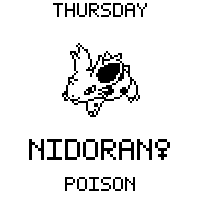

Pokeviewer v1 actual-size review
Print at 100% or “actual size”; disable fit-to-page scaling. Measure each image as 39.1 mm square before assessing handheld readability.

Print at 100% or “actual size”; disable fit-to-page scaling. Measure each image as 39.1 mm square before assessing handheld readability.
